Code 3: Linear Models and Probabilistic Programming Languages¶
This is a reference notebook for the book Bayesian Modeling and Computation in Python
The textbook is not needed to use or run this code, though the context and explanation is missing from this notebook.
If you’d like a copy it’s available from the CRC Press or from Amazon. ``
import pymc3 as pm
import matplotlib.pyplot as plt
import arviz as az
import pandas as pd
from scipy import special, stats
import numpy as np
import theano
import datetime
print(f"Last Run {datetime.datetime.now()}")
Last Run 2021-12-18 20:44:24.719911
az.style.use("arviz-grayscale")
plt.rcParams['figure.dpi'] = 300
def plot_label_resizer(axes, fontsize=14):
"""Resizes the axes labels of plots"""
for ax in axes.ravel():
for item in ([ax.title, ax.xaxis.label, ax.yaxis.label] +
ax.get_xticklabels() + ax.get_yticklabels()):
item.set_fontsize(fontsize)
return
Comparing Two (or More) Groups¶
Code 3.1¶
penguins = pd.read_csv("../data/penguins.csv")
# Subset to the columns needed
missing_data = penguins.isnull()[
["bill_length_mm", "flipper_length_mm", "sex", "body_mass_g"]
].any(axis=1)
# Drop rows with any missing data
penguins = penguins.loc[~missing_data]
penguins.head()
| species | island | bill_length_mm | bill_depth_mm | flipper_length_mm | body_mass_g | sex | year | |
|---|---|---|---|---|---|---|---|---|
| 0 | Adelie | Torgersen | 39.1 | 18.7 | 181.0 | 3750.0 | male | 2007 |
| 1 | Adelie | Torgersen | 39.5 | 17.4 | 186.0 | 3800.0 | female | 2007 |
| 2 | Adelie | Torgersen | 40.3 | 18.0 | 195.0 | 3250.0 | female | 2007 |
| 4 | Adelie | Torgersen | 36.7 | 19.3 | 193.0 | 3450.0 | female | 2007 |
| 5 | Adelie | Torgersen | 39.3 | 20.6 | 190.0 | 3650.0 | male | 2007 |
penguins.shape
(333, 8)
Table 3.1 and Code 3.2¶
summary_stats = (penguins.loc[:, ["species", "body_mass_g"]]
.groupby("species")
.agg(["mean", "std", "count"]))
summary_stats
| body_mass_g | |||
|---|---|---|---|
| mean | std | count | |
| species | |||
| Adelie | 3706.164384 | 458.620135 | 146 |
| Chinstrap | 3733.088235 | 384.335081 | 68 |
| Gentoo | 5092.436975 | 501.476154 | 119 |
Code 3.3¶
adelie_mask = (penguins["species"] == "Adelie")
adelie_mass_obs = penguins.loc[adelie_mask, "body_mass_g"].values
with pm.Model() as model_adelie_penguin_mass:
σ = pm.HalfStudentT("σ", 100, 2000)
μ = pm.Normal("μ", 4000, 3000)
mass = pm.Normal("mass", mu=μ, sigma=σ, observed=adelie_mass_obs)
prior = pm.sample_prior_predictive(samples=5000)
trace = pm.sample(chains=4)
inf_data_adelie_penguin_mass = az.from_pymc3(prior=prior, trace=trace)
/tmp/ipykernel_83821/2475052922.py:10: FutureWarning: In v4.0, pm.sample will return an `arviz.InferenceData` object instead of a `MultiTrace` by default. You can pass return_inferencedata=True or return_inferencedata=False to be safe and silence this warning.
trace = pm.sample(chains=4)
Auto-assigning NUTS sampler...
Initializing NUTS using jitter+adapt_diag...
Multiprocess sampling (4 chains in 4 jobs)
NUTS: [μ, σ]
100.00% [8000/8000 00:01<00:00 Sampling 4 chains, 0 divergences]
Sampling 4 chains for 1_000 tune and 1_000 draw iterations (4_000 + 4_000 draws total) took 1 seconds.
Figure 3.1¶
axes = az.plot_posterior(inf_data_adelie_penguin_mass.prior, var_names=["σ", "μ"], textsize=20)
# plt.savefig("img/SingleSpecies_Prior_Predictive.png")
plt.savefig("img/chp03/single_species_prior_predictive.png")

Figure 3.2¶
axes = az.plot_trace(inf_data_adelie_penguin_mass, divergences="bottom", kind="rank_bars")
plot_label_resizer(axes, fontsize=16)
# plt.savefig("img/SingleSpecies_KDE_RankPlot.png")
plt.savefig("img/chp03/single_species_KDE_rankplot.png")
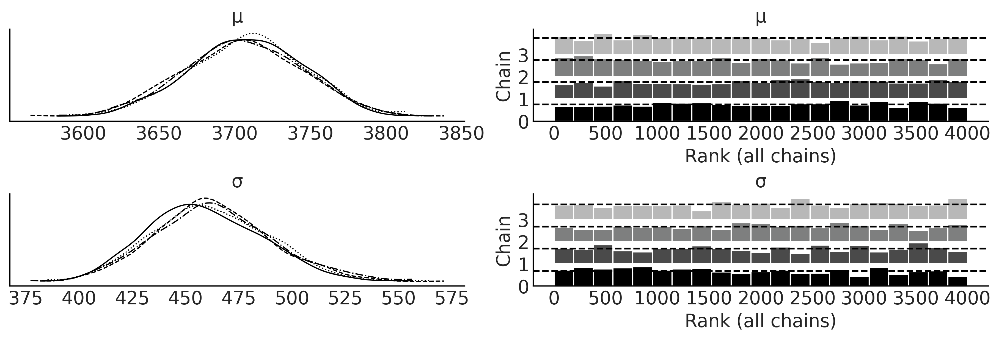
Table 3.2¶
az.summary(inf_data_adelie_penguin_mass)
| mean | sd | hdi_3% | hdi_97% | mcse_mean | mcse_sd | ess_bulk | ess_tail | r_hat | |
|---|---|---|---|---|---|---|---|---|---|
| μ | 3706.753 | 38.841 | 3627.867 | 3772.827 | 0.657 | 0.465 | 3483.0 | 2535.0 | 1.0 |
| σ | 461.989 | 27.456 | 411.883 | 513.950 | 0.482 | 0.341 | 3241.0 | 2614.0 | 1.0 |
print(az.summary(inf_data_adelie_penguin_mass).round(1).to_latex())
\begin{tabular}{lrrrrrrrrr}
\toprule
{} & mean & sd & hdi\_3\% & hdi\_97\% & mcse\_mean & mcse\_sd & ess\_bulk & ess\_tail & r\_hat \\
\midrule
μ & 3706.8 & 38.8 & 3627.9 & 3772.8 & 0.7 & 0.5 & 3483.0 & 2535.0 & 1.0 \\
σ & 462.0 & 27.5 & 411.9 & 514.0 & 0.5 & 0.3 & 3241.0 & 2614.0 & 1.0 \\
\bottomrule
\end{tabular}
Figure 3.3¶
axes = az.plot_posterior(inf_data_adelie_penguin_mass, hdi_prob=.94, textsize=26);
# plt.savefig("img/SingleSpecies_Mass_PosteriorPlot.png")
plt.savefig("img/chp03/single_species_sass_posteriorplot.png")
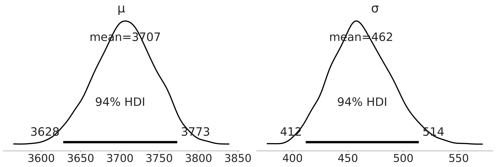
Figure 3.4¶
# pd.categorical makes it easy to index species below
all_species = pd.Categorical(penguins["species"])
with pm.Model() as model_penguin_mass_all_species:
# Note the addition of the shape parameter
σ = pm.HalfStudentT("σ", 100, 2000, shape=3)
μ = pm.Normal("μ", 4000, 3000, shape=3)
mass = pm.Normal("mass",
mu=μ[all_species.codes],
sigma=σ[all_species.codes],
observed=penguins["body_mass_g"])
trace = pm.sample()
inf_data_model_penguin_mass_all_species = az.from_pymc3(
trace=trace,
coords={"μ_dim_0": all_species.categories,
"σ_dim_0": all_species.categories})
/tmp/ipykernel_83821/3930885342.py:13: FutureWarning: In v4.0, pm.sample will return an `arviz.InferenceData` object instead of a `MultiTrace` by default. You can pass return_inferencedata=True or return_inferencedata=False to be safe and silence this warning.
trace = pm.sample()
Auto-assigning NUTS sampler...
Initializing NUTS using jitter+adapt_diag...
Multiprocess sampling (4 chains in 4 jobs)
NUTS: [μ, σ]
100.00% [8000/8000 00:01<00:00 Sampling 4 chains, 0 divergences]
Sampling 4 chains for 1_000 tune and 1_000 draw iterations (4_000 + 4_000 draws total) took 2 seconds.
Figure 3.4¶
axes = az.plot_trace(inf_data_model_penguin_mass_all_species, compact=False, divergences="bottom", kind="rank_bars");
plot_label_resizer(axes, fontsize=16)
plt.savefig("img/chp03/all_species_KDE_rankplot.png")
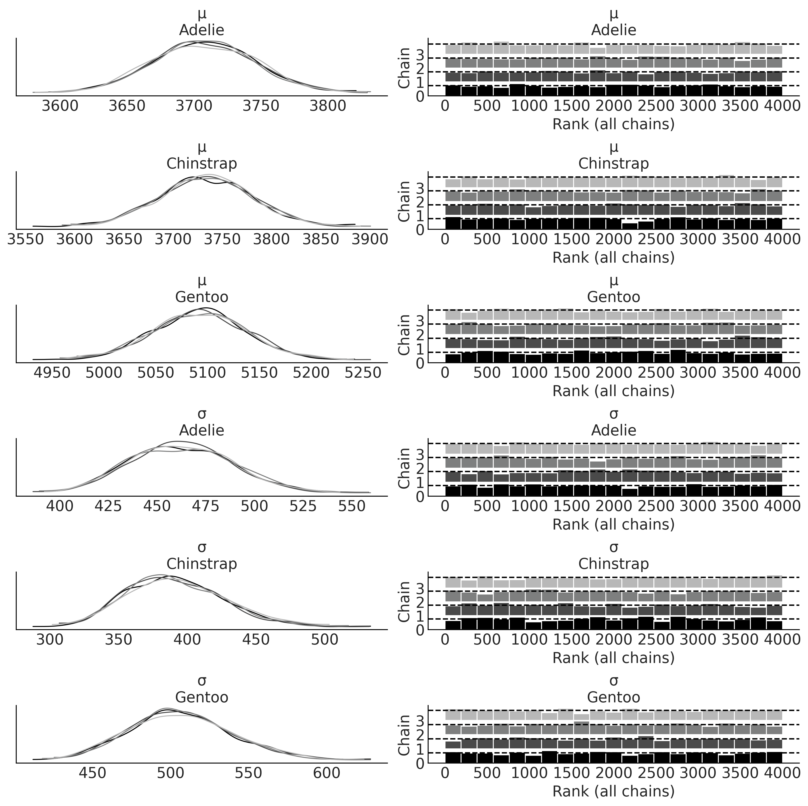
Code 3.5 and Figure 3.5¶
axes = az.plot_forest(inf_data_model_penguin_mass_all_species, var_names=["μ"], figsize=(8, 2.5))
axes[0].set_title("μ Mass Estimate: 94.0% HDI")
plt.savefig("img/chp03/independent_model_forestplotmeans.png")
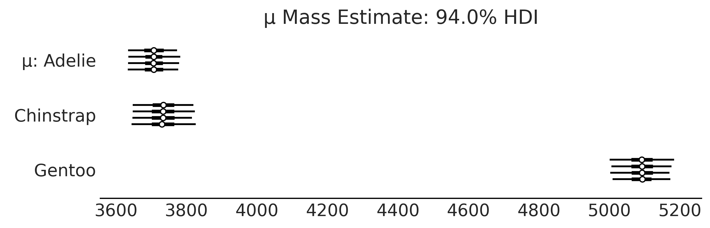
Code 3.6 and Figure 3.6¶
axes = az.plot_forest(inf_data_model_penguin_mass_all_species, var_names=["σ"], figsize=(8, 3));
axes[0].set_title("σ Mass Estimate: 94.0% HDI")
plt.savefig("img/chp03/independent_model_forestplotsigma.png")
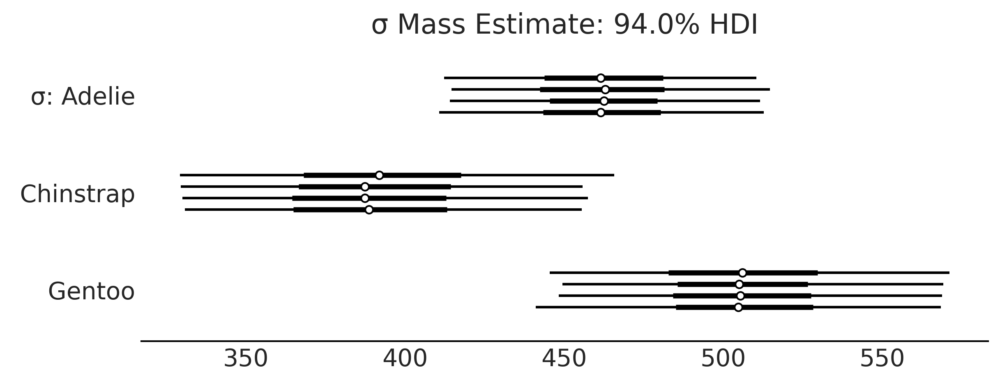
Code 3.7¶
import tensorflow as tf
import tensorflow_probability as tfp
tfd = tfp.distributions
root = tfd.JointDistributionCoroutine.Root
species_idx = tf.constant(all_species.codes, tf.int32)
body_mass_g = tf.constant(penguins["body_mass_g"], tf.float32)
@tfd.JointDistributionCoroutine
def jd_penguin_mass_all_species():
σ = yield root(tfd.Sample(
tfd.HalfStudentT(df=100, loc=0, scale=2000),
sample_shape=3,
name="sigma"))
μ = yield root(tfd.Sample(
tfd.Normal(loc=4000, scale=3000),
sample_shape=3,
name="mu"))
mass = yield tfd.Independent(
tfd.Normal(loc=tf.gather(μ, species_idx, axis=-1),
scale=tf.gather(σ, species_idx, axis=-1)),
reinterpreted_batch_ndims=1,
name="mass")
2021-12-18 20:45:55.483293: W tensorflow/stream_executor/platform/default/dso_loader.cc:64] Could not load dynamic library 'libcudart.so.11.0'; dlerror: libcudart.so.11.0: cannot open shared object file: No such file or directory
2021-12-18 20:45:55.483309: I tensorflow/stream_executor/cuda/cudart_stub.cc:29] Ignore above cudart dlerror if you do not have a GPU set up on your machine.
2021-12-18 20:45:56.765080: I tensorflow/stream_executor/cuda/cuda_gpu_executor.cc:939] successful NUMA node read from SysFS had negative value (-1), but there must be at least one NUMA node, so returning NUMA node zero
2021-12-18 20:45:56.765640: W tensorflow/stream_executor/platform/default/dso_loader.cc:64] Could not load dynamic library 'libcudart.so.11.0'; dlerror: libcudart.so.11.0: cannot open shared object file: No such file or directory
2021-12-18 20:45:56.765709: W tensorflow/stream_executor/platform/default/dso_loader.cc:64] Could not load dynamic library 'libcublas.so.11'; dlerror: libcublas.so.11: cannot open shared object file: No such file or directory
2021-12-18 20:45:56.765764: W tensorflow/stream_executor/platform/default/dso_loader.cc:64] Could not load dynamic library 'libcublasLt.so.11'; dlerror: libcublasLt.so.11: cannot open shared object file: No such file or directory
2021-12-18 20:45:56.765818: W tensorflow/stream_executor/platform/default/dso_loader.cc:64] Could not load dynamic library 'libcufft.so.10'; dlerror: libcufft.so.10: cannot open shared object file: No such file or directory
2021-12-18 20:45:56.765871: W tensorflow/stream_executor/platform/default/dso_loader.cc:64] Could not load dynamic library 'libcurand.so.10'; dlerror: libcurand.so.10: cannot open shared object file: No such file or directory
2021-12-18 20:45:56.765928: W tensorflow/stream_executor/platform/default/dso_loader.cc:64] Could not load dynamic library 'libcusolver.so.11'; dlerror: libcusolver.so.11: cannot open shared object file: No such file or directory
2021-12-18 20:45:56.765980: W tensorflow/stream_executor/platform/default/dso_loader.cc:64] Could not load dynamic library 'libcusparse.so.11'; dlerror: libcusparse.so.11: cannot open shared object file: No such file or directory
2021-12-18 20:45:56.766033: W tensorflow/stream_executor/platform/default/dso_loader.cc:64] Could not load dynamic library 'libcudnn.so.8'; dlerror: libcudnn.so.8: cannot open shared object file: No such file or directory
2021-12-18 20:45:56.766040: W tensorflow/core/common_runtime/gpu/gpu_device.cc:1850] Cannot dlopen some GPU libraries. Please make sure the missing libraries mentioned above are installed properly if you would like to use GPU. Follow the guide at https://www.tensorflow.org/install/gpu for how to download and setup the required libraries for your platform.
Skipping registering GPU devices...
2021-12-18 20:45:56.766263: I tensorflow/core/platform/cpu_feature_guard.cc:151] This TensorFlow binary is optimized with oneAPI Deep Neural Network Library (oneDNN) to use the following CPU instructions in performance-critical operations: AVX2 FMA
To enable them in other operations, rebuild TensorFlow with the appropriate compiler flags.
Code 3.8¶
prior_predictive_samples = jd_penguin_mass_all_species.sample(1000)
WARNING:tensorflow:@custom_gradient grad_fn has 'variables' in signature, but no ResourceVariables were used on the forward pass.
Code 3.9¶
jd_penguin_mass_all_species.sample(sigma=tf.constant([.1, .2, .3]))
jd_penguin_mass_all_species.sample(mu=tf.constant([.1, .2, .3]))
StructTuple(
sigma=<tf.Tensor: shape=(3,), dtype=float32, numpy=array([ 984.17804 , 1432.3654 , 23.811424], dtype=float32)>,
mu=<tf.Tensor: shape=(3,), dtype=float32, numpy=array([0.1, 0.2, 0.3], dtype=float32)>,
mass=<tf.Tensor: shape=(333,), dtype=float32, numpy=
array([ 1.59277820e+03, 1.74029861e+02, -2.06257178e+03, -1.46251465e+03,
-7.12007568e+02, -8.58797058e+02, -3.69443054e+02, 2.59977875e+02,
-2.19499438e+03, 5.80170517e+01, 5.58388245e+02, -2.27075830e+03,
6.30290161e+02, -5.42697876e+02, 1.13943579e+03, -3.47500549e+02,
6.25173950e+02, 1.96915857e+03, -6.44494171e+01, -1.00810356e+01,
-1.40153284e+03, 5.71614807e+02, 1.88863251e+02, 8.59641846e+02,
-2.31087448e+02, -2.68818512e+01, 7.05527100e+02, -1.17175163e+02,
-7.10269409e+02, 8.53588745e+02, -4.99459686e+02, 1.30170837e+03,
-3.35147614e+02, -3.81198792e+02, 1.81465369e+03, 2.73267822e+03,
-2.33141138e+03, -1.34379504e+03, 4.18273041e+02, 1.48847192e+03,
-5.08597290e+02, 8.32410156e+02, 6.75720154e+02, -1.39082544e+03,
1.17238232e+03, -3.36136871e+02, -8.17845215e+02, 4.58114685e+02,
1.24644943e+02, 5.65970581e+02, -1.18586021e+02, 7.78249023e+02,
-2.73649261e+02, -4.60504456e+02, 1.56941223e+03, 9.62508926e+01,
2.58027344e+02, -7.51703613e+02, 1.86346692e+03, -1.13687305e+03,
-7.59468750e+02, 9.94725952e+01, -1.02470264e+03, 6.36214905e+02,
-1.14848828e+03, 4.87134552e+01, 1.26691040e+03, 1.64330005e+03,
-2.09047510e+03, -4.51581177e+02, 1.16171863e+03, 7.67414795e+02,
1.25205078e+03, 1.50104370e+03, 9.69914062e+02, 3.10558380e+02,
-1.19965503e+03, -9.56353210e+02, 3.40752136e+02, 8.89398575e+01,
-6.14100891e+02, 4.34426483e+02, -1.30270349e+03, 2.10315967e+03,
5.89953308e+02, 2.57924365e+03, 1.59792712e+03, 4.42825897e+02,
6.55949036e+02, 4.48583496e+02, 2.68876678e+02, -1.32463654e+02,
-2.04114758e+03, -3.12084229e+02, 1.47825891e+03, 6.10845886e+02,
-7.20213547e+01, 6.45165649e+02, 4.56515411e+02, -1.24241663e+03,
-8.53841370e+02, -9.96677856e+01, -1.11754199e+03, -1.77395801e+03,
-3.24073563e+01, -5.82357605e+02, 1.04176038e+03, -1.11347339e+03,
1.93629150e+02, -1.09651575e+03, 6.57738037e+02, -9.87253540e+02,
-1.10180286e+03, -1.21258118e+03, -9.04189758e+02, -5.44845825e+02,
7.25768127e+01, -1.27031567e+03, -6.67254395e+02, -3.93510529e+02,
-1.54731110e+02, 1.66010095e+03, 9.81320251e+02, -1.17831677e+03,
4.37189819e+02, 1.80122766e+03, -1.04694556e+03, -1.58961700e+02,
-9.94847839e+02, -8.45950546e+01, -1.19766724e+03, 1.65026123e+03,
7.26791504e+02, 8.24744263e+02, -2.66645111e+02, 1.52967438e+02,
2.54803406e+02, -1.13226477e+03, -4.11947746e+01, -1.05935425e+03,
1.85690628e+02, -5.92542458e+01, -9.40260071e+02, -1.16005652e+03,
7.88980591e+02, -2.84209930e+02, 3.36271477e+01, 1.21519318e+01,
-1.43859272e+01, 5.22804356e+00, 3.44334912e+00, 6.18873692e+00,
2.12049961e+01, 7.55959368e+00, -9.23557949e+00, -1.62368908e+01,
-2.99185181e+01, -2.02894516e+01, 2.58949108e+01, 1.99183941e+00,
5.08944969e+01, -3.41988983e+01, -2.82153606e+00, 2.87374806e+00,
5.20911884e+00, -9.40463829e+00, 6.65663195e+00, -1.15102892e+01,
1.89506817e+01, 1.36595278e+01, -9.01013660e+00, -4.97940588e+00,
3.35252113e+01, -4.43202171e+01, 2.75493851e+01, 2.26463280e+01,
4.06722145e+01, 2.20034256e+01, 3.97897568e+01, 1.57928925e+01,
1.59634476e+01, 1.74812107e+01, 5.44678574e+01, 1.07770214e+01,
-2.07219238e+01, 3.64571457e+01, 2.31383553e+01, -1.46958675e+01,
1.45808191e+01, 1.87628288e+01, 5.12489319e+01, -1.51215267e+01,
2.33934345e+01, -3.64629936e+01, -1.36595793e+01, -1.30469093e+01,
-1.30726013e+01, -4.51576538e+01, 8.15375519e+00, 1.45111060e+00,
-4.42424679e+00, 2.19659882e+01, -3.12803135e+01, -1.33758602e+01,
5.69628754e+01, -7.07702589e+00, -1.32976570e+01, 6.39091444e+00,
3.28447075e+01, -1.58239164e+01, 2.25928459e+01, -2.64287319e+01,
4.09493637e+00, -1.73552303e+01, -1.37638521e+01, -1.03480415e+01,
1.31702690e+01, -5.55252457e+00, -6.45695257e+00, -7.91119671e+00,
8.63311481e+00, -3.71408248e+00, 1.89272327e+01, -3.00111599e+01,
8.32475185e+00, -3.59311028e+01, 1.55968752e+01, 1.47428007e+01,
6.83199120e+00, -9.36541080e+00, -2.57249203e+01, -5.87016249e+00,
5.89314766e+01, -2.80009613e+01, -2.19480286e+01, 2.25735798e+01,
-5.28967438e+01, -1.13437290e+01, -2.64563141e+01, -2.82594538e+00,
-2.15410399e+00, -1.73472481e+01, -3.58383484e+01, -8.41413403e+00,
3.08872890e+00, 4.59339676e+01, -1.42053533e+00, 9.41158104e+00,
-2.74693413e+01, 1.06119037e+00, -2.22844105e+01, -9.83955479e+00,
5.87730742e+00, 2.64358902e+01, -1.28465643e+01, -5.42675018e+00,
1.78671598e+00, 2.83268299e+01, 3.82597275e+01, 2.91233158e+01,
1.09353762e+01, -1.38127499e+01, 4.05395317e+01, -2.47722950e+01,
-2.31177521e+01, -7.95298950e+02, 1.31868835e+03, 1.46139233e+03,
-3.64959869e+01, -2.79999463e+03, 1.57899646e+03, 1.65152307e+03,
1.58345239e+03, -1.19716040e+03, -3.85650574e+02, 4.19351624e+02,
1.62565720e+02, -1.24119800e+03, 1.12097351e+03, -5.25376404e+02,
2.54251855e+03, 1.79535583e+03, 1.85711914e+03, -1.63942749e+03,
1.57116602e+03, 1.29036047e+03, 4.89481110e+02, -6.91691772e+02,
-3.96255608e+01, -1.01045276e+03, 7.69528320e+02, -1.94146350e+03,
-9.67592651e+02, 1.03885582e+02, -2.51740814e+02, 4.09711719e+03,
-2.81403900e+02, 2.32521899e+03, -4.66869476e+02, -1.16463528e+01,
7.77259888e+02, 1.20552148e+03, 5.14861023e+02, 1.53398022e+03,
1.26108447e+03, -2.39649185e+02, 9.44432373e+02, -1.75923035e+03,
-2.51751160e+02, 1.63313553e+02, 3.83157867e+02, 5.32653381e+02,
6.06293869e+01, -5.49642090e+02, -4.20874878e+02, 1.37408252e+03,
1.25483044e+03, -1.06353918e+03, 2.88687012e+03, 5.67746521e+02,
-1.20699072e+03, -1.26404839e+02, -3.23124536e+03, 1.45659515e+02,
-3.70713715e+02, 3.84916595e+02, 7.13405884e+02, 6.07978149e+02,
2.09624707e+03, -9.68292847e+02, 9.14017883e+02, 6.08840149e+02,
-9.87656982e+02], dtype=float32)>
)
Code 3.10¶
target_density_function = lambda *x: jd_penguin_mass_all_species.log_prob(
*x, mass=body_mass_g)
jd_penguin_mass_observed = jd_penguin_mass_all_species.experimental_pin(
mass=body_mass_g)
target_density_function = jd_penguin_mass_observed.unnormalized_log_prob
# init_state = jd_penguin_mass_observed.sample_unpinned(10)
# target_density_function1(*init_state), target_density_function2(*init_state)
Code 3.11¶
run_mcmc = tf.function(
tfp.experimental.mcmc.windowed_adaptive_nuts,
autograph=False, jit_compile=True)
mcmc_samples, sampler_stats = run_mcmc(
1000, jd_penguin_mass_all_species, n_chains=4, num_adaptation_steps=1000,
mass=body_mass_g)
inf_data_model_penguin_mass_all_species2 = az.from_dict(
posterior={
# TFP mcmc returns (num_samples, num_chains, ...), we swap
# the first and second axis below for each RV so the shape
# is what ArviZ expected.
k:np.swapaxes(v, 1, 0)
for k, v in mcmc_samples._asdict().items()},
sample_stats={
k:np.swapaxes(sampler_stats[k], 1, 0)
for k in ["target_log_prob", "diverging", "accept_ratio", "n_steps"]}
)
WARNING:tensorflow:@custom_gradient grad_fn has 'variables' in signature, but no ResourceVariables were used on the forward pass.
WARNING:tensorflow:@custom_gradient grad_fn has 'variables' in signature, but no ResourceVariables were used on the forward pass.
WARNING:tensorflow:@custom_gradient grad_fn has 'variables' in signature, but no ResourceVariables were used on the forward pass.
WARNING:tensorflow:From /home/canyon/miniconda3/envs/bmcp/lib/python3.9/site-packages/tensorflow_probability/python/distributions/distribution.py:342: calling MultivariateNormalDiag.__init__ (from tensorflow_probability.python.distributions.mvn_diag) with scale_identity_multiplier is deprecated and will be removed after 2020-01-01.
Instructions for updating:
`scale_identity_multiplier` is deprecated; please combine it into `scale_diag` directly instead.
2021-12-18 20:46:02.238969: I tensorflow/compiler/xla/service/service.cc:171] XLA service 0x5648a2333df0 initialized for platform Host (this does not guarantee that XLA will be used). Devices:
2021-12-18 20:46:02.238988: I tensorflow/compiler/xla/service/service.cc:179] StreamExecutor device (0): Host, Default Version
2021-12-18 20:46:02.394799: I tensorflow/compiler/mlir/tensorflow/utils/dump_mlir_util.cc:237] disabling MLIR crash reproducer, set env var `MLIR_CRASH_REPRODUCER_DIRECTORY` to enable.
2021-12-18 20:46:02.458876: W tensorflow/compiler/tf2xla/kernels/random_ops.cc:102] Warning: Using tf.random.uniform with XLA compilation will ignore seeds; consider using tf.random.stateless_uniform instead if reproducible behavior is desired. sanitize_seed/seed
2021-12-18 20:46:02.543972: W tensorflow/compiler/tf2xla/kernels/assert_op.cc:38] Ignoring Assert operator mcmc_retry_init/assert_equal_1/Assert/AssertGuard/Assert
2021-12-18 20:46:11.072136: I tensorflow/compiler/jit/xla_compilation_cache.cc:351] Compiled cluster using XLA! This line is logged at most once for the lifetime of the process.
az.plot_trace(inf_data_model_penguin_mass_all_species2, divergences="bottom", kind="rank_bars", figsize=(6,4));
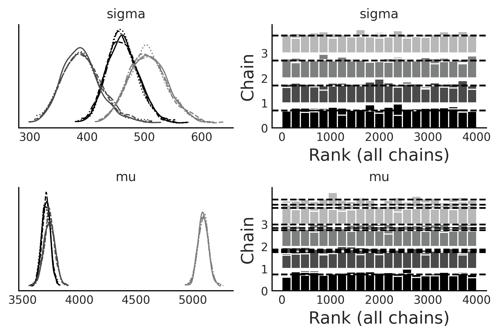
Code 3.12¶
prior_predictive_samples = jd_penguin_mass_all_species.sample([1, 1000])
dist, samples = jd_penguin_mass_all_species.sample_distributions(
value=mcmc_samples)
ppc_samples = samples[-1]
ppc_distribution = dist[-1].distribution
data_log_likelihood = ppc_distribution.log_prob(body_mass_g)
# Be careful not to run this code twice during REPL workflow.
inf_data_model_penguin_mass_all_species2.add_groups(
prior=prior_predictive_samples[:-1]._asdict(),
prior_predictive={"mass": prior_predictive_samples[-1]},
posterior_predictive={"mass": np.swapaxes(ppc_samples, 1, 0)},
log_likelihood={"mass": np.swapaxes(data_log_likelihood, 1, 0)},
observed_data={"mass": body_mass_g}
)
/home/canyon/miniconda3/envs/bmcp/lib/python3.9/site-packages/arviz/data/inference_data.py:1328: UserWarning: the default dims 'chain' and 'draw' will be added automatically
warnings.warn(
az.plot_ppc(inf_data_model_penguin_mass_all_species2)
<AxesSubplot:xlabel='mass'>
az.loo(inf_data_model_penguin_mass_all_species2)
Computed from 4000 by 333 log-likelihood matrix
Estimate SE
elpd_loo -2516.19 11.63
p_loo 5.48 -
Linear Regression¶
Figure 3.7¶
fig = plt.figure(figsize=(10, 8))
ax = fig.gca(projection="3d")
x = np.linspace(-16, 12, 500)
z = np.array([0, 4, 8])
for i, zi in enumerate(z):
dens = stats.norm(-zi, 3).pdf(x)
ax.plot(x, dens, zs=zi + 1, zdir="y", c="k")
ax.plot([-zi, -zi], [0, max(dens)], zs=zi + 1, c="k", ls=":", zdir="y")
ax.text(
-zi,
zi - 1,
max(dens) * 1.03 + i / 100,
f"$\\mathcal{{N}}(\\beta_0 + \\beta_1 x_{i}, \\sigma)$",
zdir="y",
fontsize=18,
)
ax.plot(-z, z + 1, "C4-", lw=3)
ax.set_xlabel("y", fontsize=20)
ax.set_ylabel("x", fontsize=24, labelpad=20)
ax.set_yticks([zi + 1 for zi in z])
ax.set_yticklabels([f"$x_{i}$" for i in range(len(z))], fontsize=22)
ax.grid(False)
ax.set_xticks([])
ax.set_zticks([])
ax.yaxis.pane.fill = False
ax.xaxis.pane.fill = False
ax.xaxis.pane.set_edgecolor("None")
ax.yaxis.pane.set_edgecolor("None")
ax.zaxis.pane.set_facecolor("C3")
ax.w_zaxis.line.set_linewidth(0)
ax.view_init(elev=10, azim=-25)
# plt.savefig("img/3d_linear_regression.png", bbox_inches="tight", dpi=300)
plt.savefig("img/chp03/3d_linear_regression.png", bbox_inches="tight", dpi=300)
/tmp/ipykernel_83821/2974397516.py:2: MatplotlibDeprecationWarning: Calling gca() with keyword arguments was deprecated in Matplotlib 3.4. Starting two minor releases later, gca() will take no keyword arguments. The gca() function should only be used to get the current axes, or if no axes exist, create new axes with default keyword arguments. To create a new axes with non-default arguments, use plt.axes() or plt.subplot().
ax = fig.gca(projection="3d")
/tmp/ipykernel_83821/2974397516.py:39: UserWarning: constrained_layout not applied because axes sizes collapsed to zero. Try making figure larger or axes decorations smaller.
plt.savefig("img/chp03/3d_linear_regression.png", bbox_inches="tight", dpi=300)
/home/canyon/miniconda3/envs/bmcp/lib/python3.9/site-packages/IPython/core/pylabtools.py:151: UserWarning: constrained_layout not applied because axes sizes collapsed to zero. Try making figure larger or axes decorations smaller.
fig.canvas.print_figure(bytes_io, **kw)
Code 3.13¶
adelie_flipper_length_obs = penguins.loc[adelie_mask, "flipper_length_mm"]
with pm.Model() as model_adelie_flipper_regression:
# pm.Data allows us to change the underlying value in a later code block
adelie_flipper_length = pm.Data("adelie_flipper_length", adelie_flipper_length_obs)
σ = pm.HalfStudentT("σ", 100, 2000)
β_0 = pm.Normal("β_0", 0, 4000)
β_1 = pm.Normal("β_1", 0, 4000)
μ = pm.Deterministic("μ", β_0 + β_1 * adelie_flipper_length)
mass = pm.Normal("mass", mu=μ, sigma=σ, observed=adelie_mass_obs)
inf_data_adelie_flipper_regression = pm.sample(return_inferencedata=True)
Auto-assigning NUTS sampler...
Initializing NUTS using jitter+adapt_diag...
Multiprocess sampling (4 chains in 4 jobs)
NUTS: [β_1, β_0, σ]
100.00% [8000/8000 00:11<00:00 Sampling 4 chains, 2 divergences]
Sampling 4 chains for 1_000 tune and 1_000 draw iterations (4_000 + 4_000 draws total) took 12 seconds.
There were 2 divergences after tuning. Increase `target_accept` or reparameterize.
The acceptance probability does not match the target. It is 0.890967753131468, but should be close to 0.8. Try to increase the number of tuning steps.
The number of effective samples is smaller than 25% for some parameters.
Figure 3.8¶
axes = az.plot_posterior(inf_data_adelie_flipper_regression, var_names = ["β_0", "β_1"], textsize=20);
#plot_label_resizer(axes, fontsize)
plt.savefig("img/chp03/adelie_coefficient_posterior_plots")
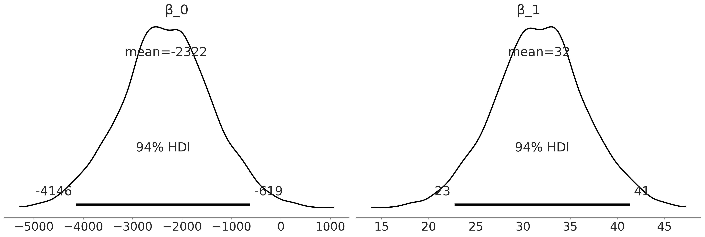
Figure 3.9¶
axes = az.plot_forest(
[inf_data_adelie_penguin_mass, inf_data_adelie_flipper_regression],
model_names=["mass_only", "flipper_regression"],
var_names=["σ"], combined=True, figsize=(10,2))
axes[0].set_title("σ Comparison 94.0 HDI")
plt.savefig("img/chp03/SingleSpecies_SingleRegression_Forest_Sigma_Comparison.png")
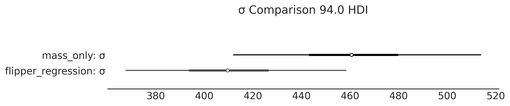
Figure 3.10¶
fig, ax = plt.subplots()
alpha_m = inf_data_adelie_flipper_regression.posterior.mean().to_dict()["data_vars"]["β_0"]["data"]
beta_m = inf_data_adelie_flipper_regression.posterior.mean().to_dict()["data_vars"]["β_1"]["data"]
flipper_length = np.linspace(adelie_flipper_length_obs.min(), adelie_flipper_length_obs.max(), 100)
flipper_length_mean = alpha_m + beta_m * flipper_length
ax.plot(flipper_length, flipper_length_mean, c='C4',
label=f'y = {alpha_m:.2f} + {beta_m:.2f} * x')
ax.scatter(adelie_flipper_length_obs, adelie_mass_obs)
# Figure out how to do this from inference data
az.plot_hdi(adelie_flipper_length_obs, inf_data_adelie_flipper_regression.posterior['μ'], hdi_prob=0.94, color='k', ax=ax)
ax.set_xlabel('Flipper Length')
ax.set_ylabel('Mass');
plt.savefig('img/chp03/flipper_length_mass_regression.png', dpi=300)
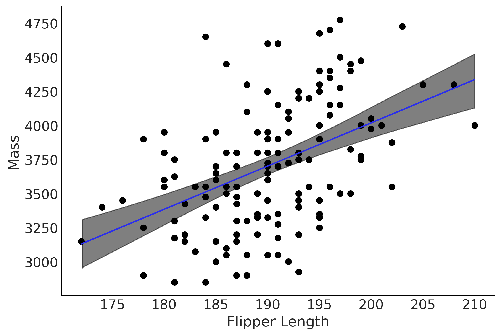
Code 3.14¶
with model_adelie_flipper_regression:
# Change the underlying value to the mean observed flipper length
# for our posterior predictive samples
pm.set_data({"adelie_flipper_length": [adelie_flipper_length_obs.mean()]})
posterior_predictions = pm.sample_posterior_predictive(
inf_data_adelie_flipper_regression.posterior, var_names=["mass", "μ"])
100.00% [4000/4000 00:03<00:00]
Figure 3.11¶
fig, ax = plt.subplots()
az.plot_dist(posterior_predictions["mass"], label="Posterior Predictive of \nIndividual Penguin Mass", ax=ax)
az.plot_dist(posterior_predictions["μ"],label="Posterior Predictive of μ", color="C4", ax=ax)
ax.set_xlim(2900, 4500);
ax.legend(loc=2)
ax.set_xlabel("Mass (grams)")
ax.set_yticks([])
plt.savefig('img/chp03/flipper_length_mass_posterior_predictive.png', dpi=300)
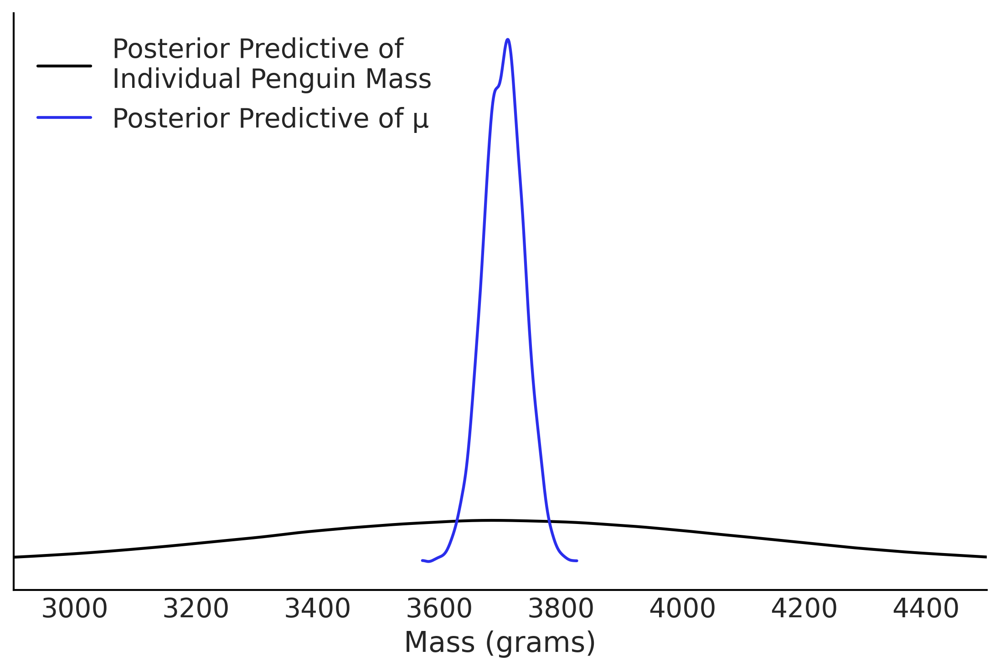
Code 3.15¶
adelie_flipper_length_obs = penguins.loc[adelie_mask, "flipper_length_mm"].values
adelie_flipper_length_c = adelie_flipper_length_obs - adelie_flipper_length_obs.mean()
PyMC Centered Model¶
with pm.Model() as model_adelie_flipper_regression:
σ = pm.HalfStudentT("σ", 100, 2000)
β_1 = pm.Normal("β_1", 0, 4000)
β_0 = pm.Normal("β_0", 0, 4000)
μ = pm.Deterministic("μ", β_0 + β_1*adelie_flipper_length_c)
mass = pm.Normal("mass", mu=μ, sigma=σ, observed = adelie_mass_obs)
# Need to remove this one I find bug
inf_data_adelie_flipper_length_c = pm.sample(return_inferencedata=True, random_seed=0)
Auto-assigning NUTS sampler...
Initializing NUTS using jitter+adapt_diag...
Multiprocess sampling (4 chains in 4 jobs)
NUTS: [β_0, β_1, σ]
100.00% [8000/8000 00:01<00:00 Sampling 4 chains, 0 divergences]
Sampling 4 chains for 1_000 tune and 1_000 draw iterations (4_000 + 4_000 draws total) took 2 seconds.
az.plot_posterior(inf_data_adelie_flipper_length_c, var_names = ["β_0", "β_1"], textsize=24);
plt.savefig("img/chp03/singlespecies_multipleregression_centered.png")
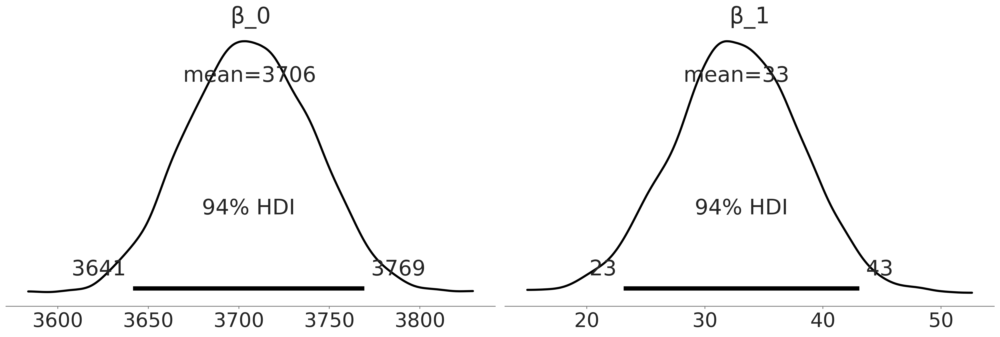
Code 3.16¶
adelie_flipper_length_c = adelie_flipper_length_obs - adelie_flipper_length_obs.mean()
def gen_adelie_flipper_model(adelie_flipper_length):
adelie_flipper_length = tf.constant(adelie_flipper_length, tf.float32)
@tfd.JointDistributionCoroutine
def jd_adelie_flipper_regression():
σ = yield root(tfd.HalfStudentT(df=100, loc=0, scale=2000, name='sigma'))
β_1 = yield root(tfd.Normal(loc=0, scale=4000, name='beta_1'))
β_0 = yield root(tfd.Normal(loc=0, scale=4000, name='beta_0'))
μ = β_0[..., None] + β_1[..., None] * adelie_flipper_length
mass = yield tfd.Independent(
tfd.Normal(loc=μ, scale=σ[..., None]),
reinterpreted_batch_ndims=1,
name='mass')
return jd_adelie_flipper_regression
# Use non-centered predictor, this gives the same model as
# model_adelie_flipper_regression
jd_adelie_flipper_regression = gen_adelie_flipper_model(
adelie_flipper_length_obs)
# Use centered predictor
jd_adelie_flipper_regression = gen_adelie_flipper_model(
adelie_flipper_length_c)
mcmc_samples, sampler_stats = run_mcmc(
1000, jd_adelie_flipper_regression, n_chains=4, num_adaptation_steps=1000,
mass=tf.constant(adelie_mass_obs, tf.float32))
inf_data_adelie_flipper_length_c = az.from_dict(
posterior={
k:np.swapaxes(v, 1, 0)
for k, v in mcmc_samples._asdict().items()},
sample_stats={
k:np.swapaxes(sampler_stats[k], 1, 0)
for k in ["target_log_prob", "diverging", "accept_ratio", "n_steps"]
}
)
WARNING:tensorflow:@custom_gradient grad_fn has 'variables' in signature, but no ResourceVariables were used on the forward pass.
WARNING:tensorflow:@custom_gradient grad_fn has 'variables' in signature, but no ResourceVariables were used on the forward pass.
WARNING:tensorflow:@custom_gradient grad_fn has 'variables' in signature, but no ResourceVariables were used on the forward pass.
WARNING:tensorflow:@custom_gradient grad_fn has 'variables' in signature, but no ResourceVariables were used on the forward pass.
WARNING:tensorflow:@custom_gradient grad_fn has 'variables' in signature, but no ResourceVariables were used on the forward pass.
WARNING:tensorflow:@custom_gradient grad_fn has 'variables' in signature, but no ResourceVariables were used on the forward pass.
WARNING:tensorflow:@custom_gradient grad_fn has 'variables' in signature, but no ResourceVariables were used on the forward pass.
2021-12-18 20:47:16.412125: W tensorflow/core/framework/op_kernel.cc:1745] OP_REQUIRES failed at functional_ops.cc:373 : INTERNAL: No function library
2021-12-18 20:47:16.432889: W tensorflow/core/framework/op_kernel.cc:1745] OP_REQUIRES failed at functional_ops.cc:373 : INTERNAL: No function library
2021-12-18 20:47:16.444344: W tensorflow/core/framework/op_kernel.cc:1745] OP_REQUIRES failed at functional_ops.cc:373 : INTERNAL: No function library
2021-12-18 20:47:16.471273: W tensorflow/core/framework/op_kernel.cc:1745] OP_REQUIRES failed at functional_ops.cc:373 : INTERNAL: No function library
2021-12-18 20:47:16.795591: W tensorflow/core/framework/op_kernel.cc:1745] OP_REQUIRES failed at functional_ops.cc:373 : INTERNAL: No function library
2021-12-18 20:47:16.803043: W tensorflow/core/framework/op_kernel.cc:1745] OP_REQUIRES failed at functional_ops.cc:373 : INTERNAL: No function library
2021-12-18 20:47:16.807013: W tensorflow/core/framework/op_kernel.cc:1745] OP_REQUIRES failed at functional_ops.cc:373 : INTERNAL: No function library
2021-12-18 20:47:16.817171: W tensorflow/core/framework/op_kernel.cc:1745] OP_REQUIRES failed at functional_ops.cc:373 : INTERNAL: No function library
2021-12-18 20:47:16.961715: W tensorflow/compiler/tf2xla/kernels/assert_op.cc:38] Ignoring Assert operator mcmc_retry_init/assert_equal_1/Assert/AssertGuard/Assert
Figure 3.12¶
az.plot_posterior(inf_data_adelie_flipper_length_c, var_names = ["beta_0", "beta_1"]);
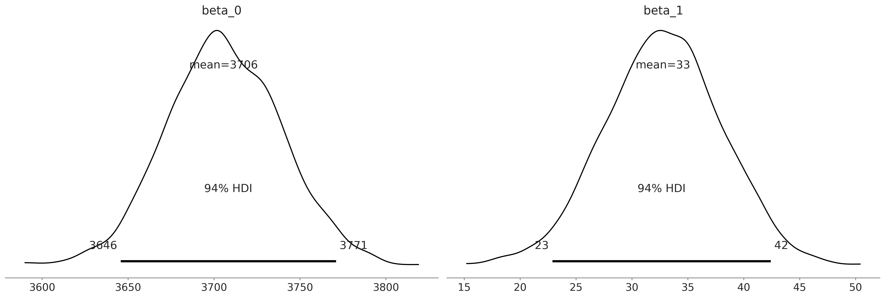
Multiple Linear Regression¶
Code 3.17¶
# Binary encoding of the categorical predictor
sex_obs = penguins.loc[adelie_mask ,"sex"].replace({"male":0, "female":1})
with pm.Model() as model_penguin_mass_categorical:
σ = pm.HalfStudentT("σ", 100, 2000)
β_0 = pm.Normal("β_0", 0, 3000)
β_1 = pm.Normal("β_1", 0, 3000)
β_2 = pm.Normal("β_2", 0, 3000)
μ = pm.Deterministic(
"μ", β_0 + β_1 * adelie_flipper_length_obs + β_2 * sex_obs)
mass = pm.Normal("mass", mu=μ, sigma=σ, observed=adelie_mass_obs)
inf_data_penguin_mass_categorical = pm.sample(
target_accept=.9, return_inferencedata=True)
Auto-assigning NUTS sampler...
Initializing NUTS using jitter+adapt_diag...
Multiprocess sampling (4 chains in 4 jobs)
NUTS: [β_2, β_1, β_0, σ]
100.00% [8000/8000 00:18<00:00 Sampling 4 chains, 0 divergences]
Sampling 4 chains for 1_000 tune and 1_000 draw iterations (4_000 + 4_000 draws total) took 19 seconds.
Figure 3.13¶
az.plot_posterior(inf_data_penguin_mass_categorical, var_names =["β_0", "β_1", "β_2"], textsize=30)
plt.savefig("img/chp03/adelie_sex_coefficient_posterior.png")
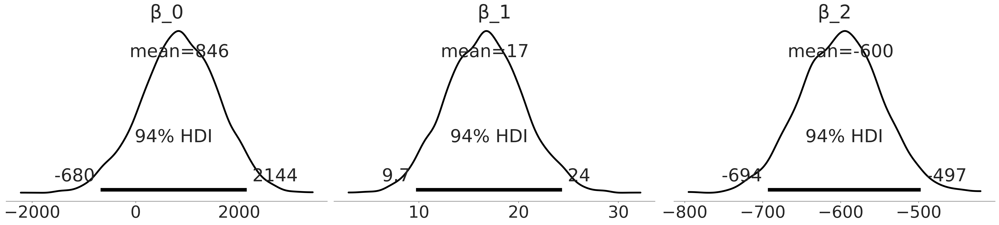
az.summary(inf_data_penguin_mass_categorical, var_names=["β_0","β_1","β_2", "σ"])
| mean | sd | hdi_3% | hdi_97% | mcse_mean | mcse_sd | ess_bulk | ess_tail | r_hat | |
|---|---|---|---|---|---|---|---|---|---|
| β_0 | 845.533 | 749.469 | -679.716 | 2144.105 | 20.356 | 14.553 | 1360.0 | 1611.0 | 1.0 |
| β_1 | 16.626 | 3.893 | 9.702 | 24.352 | 0.105 | 0.075 | 1370.0 | 1598.0 | 1.0 |
| β_2 | -599.878 | 52.418 | -693.529 | -497.431 | 1.161 | 0.827 | 2039.0 | 1977.0 | 1.0 |
| σ | 297.900 | 17.592 | 264.834 | 330.015 | 0.376 | 0.268 | 2236.0 | 2082.0 | 1.0 |
Code 3.19 and Figure 3.15¶
axes = az.plot_forest(
[inf_data_adelie_penguin_mass, inf_data_adelie_flipper_regression, inf_data_penguin_mass_categorical],
model_names=["mass_only", "flipper_regression", "flipper_sex_regression"],
var_names=["σ"], combined=True, figsize=(10,2))
axes[0].set_title("σ Comparison 94.0 HDI")
plt.savefig("img/chp03/singlespecies_multipleregression_forest_sigma_comparison.png")
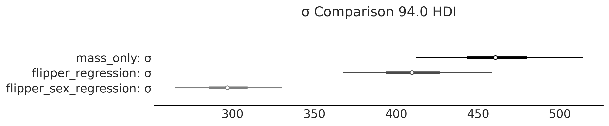
Figure 3.14¶
# Fix colors
fig, ax = plt.subplots()
alpha_1 = inf_data_penguin_mass_categorical.posterior.mean().to_dict()["data_vars"]["β_0"]["data"]
beta_1 = inf_data_penguin_mass_categorical.posterior.mean().to_dict()["data_vars"]["β_1"]["data"]
beta_2 = inf_data_penguin_mass_categorical.posterior.mean().to_dict()["data_vars"]["β_2"]["data"]
flipper_length = np.linspace(adelie_flipper_length_obs.min(), adelie_flipper_length_obs.max(), 100)
mass_mean_male = alpha_1 + beta_1 * flipper_length
mass_mean_female = alpha_1 + beta_1 * flipper_length + beta_2
ax.plot(flipper_length, mass_mean_male,
label="Male")
ax.plot(flipper_length, mass_mean_female, c='C4',
label="Female")
ax.scatter(adelie_flipper_length_obs, adelie_mass_obs, c=[{0:"k", 1:"b"}[code] for code in sex_obs.values])
# Figure out how to do this from inference data
#az.plot_hpd(adelie_flipper_length, trace.get_values(varname="μ"), credible_interval=0.94, color='k', ax=ax)
ax.set_xlabel('Flipper Length')
ax.set_ylabel('Mass');
ax.legend()
plt.savefig("img/chp03/single_species_categorical_regression.png")
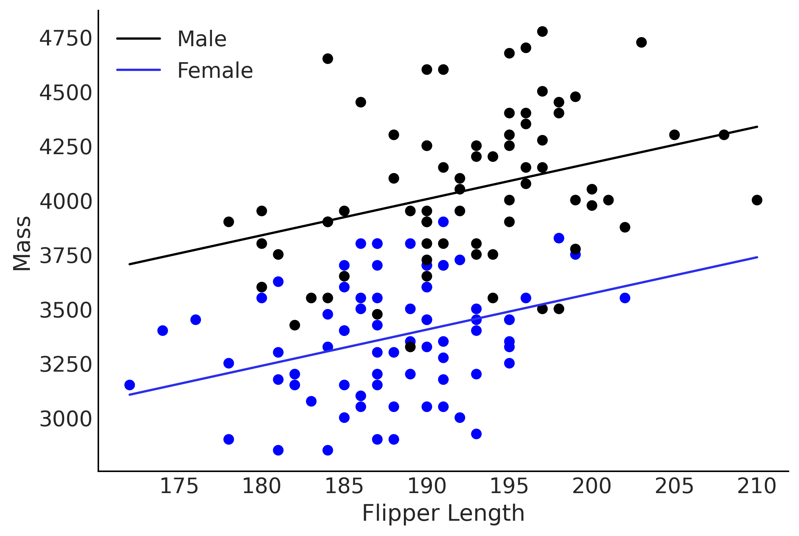
def gen_jd_flipper_bill_sex(flipper_length, sex, bill_length, dtype=tf.float32):
flipper_length, sex, bill_length = tf.nest.map_structure(
lambda x: tf.constant(x, dtype),
(flipper_length, sex, bill_length)
)
@tfd.JointDistributionCoroutine
def jd_flipper_bill_sex():
σ = yield root(
tfd.HalfStudentT(df=100, loc=0, scale=2000, name="sigma"))
β_0 = yield root(tfd.Normal(loc=0, scale=3000, name="beta_0"))
β_1 = yield root(tfd.Normal(loc=0, scale=3000, name="beta_1"))
β_2 = yield root(tfd.Normal(loc=0, scale=3000, name="beta_2"))
β_3 = yield root(tfd.Normal(loc=0, scale=3000, name="beta_3"))
μ = (β_0[..., None]
+ β_1[..., None] * flipper_length
+ β_2[..., None] * sex
+ β_3[..., None] * bill_length
)
mass = yield tfd.Independent(
tfd.Normal(loc=μ, scale=σ[..., None]),
reinterpreted_batch_ndims=1,
name="mass")
return jd_flipper_bill_sex
bill_length_obs = penguins.loc[adelie_mask, "bill_length_mm"]
jd_flipper_bill_sex = gen_jd_flipper_bill_sex(
adelie_flipper_length_obs, sex_obs, bill_length_obs)
mcmc_samples, sampler_stats = run_mcmc(
1000, jd_flipper_bill_sex, n_chains=4, num_adaptation_steps=1000,
mass=tf.constant(adelie_mass_obs, tf.float32))
WARNING:tensorflow:@custom_gradient grad_fn has 'variables' in signature, but no ResourceVariables were used on the forward pass.
WARNING:tensorflow:@custom_gradient grad_fn has 'variables' in signature, but no ResourceVariables were used on the forward pass.
WARNING:tensorflow:@custom_gradient grad_fn has 'variables' in signature, but no ResourceVariables were used on the forward pass.
WARNING:tensorflow:@custom_gradient grad_fn has 'variables' in signature, but no ResourceVariables were used on the forward pass.
WARNING:tensorflow:@custom_gradient grad_fn has 'variables' in signature, but no ResourceVariables were used on the forward pass.
WARNING:tensorflow:@custom_gradient grad_fn has 'variables' in signature, but no ResourceVariables were used on the forward pass.
WARNING:tensorflow:@custom_gradient grad_fn has 'variables' in signature, but no ResourceVariables were used on the forward pass.
2021-12-18 20:48:11.203018: W tensorflow/core/framework/op_kernel.cc:1745] OP_REQUIRES failed at functional_ops.cc:373 : INTERNAL: No function library
2021-12-18 20:48:11.232672: W tensorflow/core/framework/op_kernel.cc:1745] OP_REQUIRES failed at functional_ops.cc:373 : INTERNAL: No function library
2021-12-18 20:48:11.243727: W tensorflow/core/framework/op_kernel.cc:1745] OP_REQUIRES failed at functional_ops.cc:373 : INTERNAL: No function library
2021-12-18 20:48:11.287469: W tensorflow/core/framework/op_kernel.cc:1745] OP_REQUIRES failed at functional_ops.cc:373 : INTERNAL: No function library
2021-12-18 20:48:11.734046: W tensorflow/core/framework/op_kernel.cc:1745] OP_REQUIRES failed at functional_ops.cc:373 : INTERNAL: No function library
2021-12-18 20:48:11.744086: W tensorflow/core/framework/op_kernel.cc:1745] OP_REQUIRES failed at functional_ops.cc:373 : INTERNAL: No function library
2021-12-18 20:48:11.751730: W tensorflow/core/framework/op_kernel.cc:1745] OP_REQUIRES failed at functional_ops.cc:373 : INTERNAL: No function library
2021-12-18 20:48:11.762107: W tensorflow/core/framework/op_kernel.cc:1745] OP_REQUIRES failed at functional_ops.cc:373 : INTERNAL: No function library
2021-12-18 20:48:11.932620: W tensorflow/compiler/tf2xla/kernels/assert_op.cc:38] Ignoring Assert operator mcmc_retry_init/assert_equal_1/Assert/AssertGuard/Assert
inf_data_model_penguin_flipper_bill_sex = az.from_dict(
posterior={
k:np.swapaxes(v, 1, 0)
for k, v in mcmc_samples._asdict().items()},
sample_stats={
k:np.swapaxes(sampler_stats[k], 1, 0)
for k in ["target_log_prob", "diverging", "accept_ratio", "n_steps"]}
)
az.plot_posterior(inf_data_model_penguin_flipper_bill_sex, var_names=["beta_1", "beta_2", "beta_3"]);
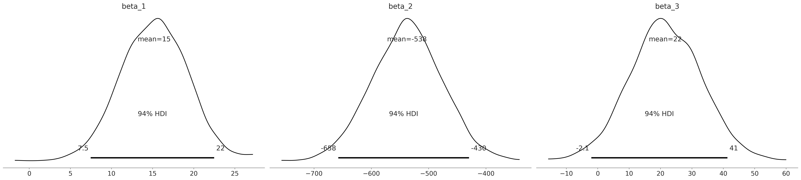
az.summary(inf_data_model_penguin_flipper_bill_sex, var_names=["beta_1", "beta_2", "beta_3", "sigma"])
| mean | sd | hdi_3% | hdi_97% | mcse_mean | mcse_sd | ess_bulk | ess_tail | r_hat | |
|---|---|---|---|---|---|---|---|---|---|
| beta_1 | 15.186 | 4.030 | 7.460 | 22.477 | 0.101 | 0.072 | 1604.0 | 1741.0 | 1.0 |
| beta_2 | -538.014 | 60.672 | -657.765 | -429.722 | 1.334 | 0.944 | 2069.0 | 2487.0 | 1.0 |
| beta_3 | 21.515 | 11.486 | -2.061 | 41.310 | 0.255 | 0.182 | 2026.0 | 2113.0 | 1.0 |
| sigma | 294.728 | 17.515 | 262.270 | 326.914 | 0.322 | 0.228 | 2931.0 | 2347.0 | 1.0 |
Code 3.21¶
mean_flipper_length = penguins.loc[adelie_mask, "flipper_length_mm"].mean()
# Counterfactual dimensions is set to 21 to allow us to get the mean exactly
counterfactual_flipper_lengths = np.linspace(
mean_flipper_length-20, mean_flipper_length+20, 21)
sex_male_indicator = np.zeros_like(counterfactual_flipper_lengths)
mean_bill_length = np.ones_like(
counterfactual_flipper_lengths) * bill_length_obs.mean()
jd_flipper_bill_sex_counterfactual = gen_jd_flipper_bill_sex(
counterfactual_flipper_lengths, sex_male_indicator, mean_bill_length)
ppc_samples = jd_flipper_bill_sex_counterfactual.sample(value=mcmc_samples)
estimated_mass = ppc_samples[-1].numpy().reshape(-1, 21)
WARNING:tensorflow:@custom_gradient grad_fn has 'variables' in signature, but no ResourceVariables were used on the forward pass.
Figure 3.16¶
az.plot_hdi(counterfactual_flipper_lengths, estimated_mass, color="C2", plot_kwargs={"ls": "--"})
plt.plot(counterfactual_flipper_lengths, estimated_mass.mean(axis=0), lw=4, c="blue")
plt.title("Mass estimates with Flipper Length Counterfactual for \n Male Penguins at Mean Observed Bill Length")
plt.xlabel("Counterfactual Flipper Length")
plt.ylabel("Mass")
plt.savefig("img/chp03/linear_counter_factual.png")
/home/canyon/miniconda3/envs/bmcp/lib/python3.9/site-packages/arviz/stats/stats.py:456: FutureWarning: hdi currently interprets 2d data as (draw, shape) but this will change in a future release to (chain, draw) for coherence with other functions
warnings.warn(
Generalized Linear Models¶
Figure 3.17¶
x = np.linspace(-10, 10, 1000)
y = special.expit(x)
plt.plot(x,y)
plt.savefig("img/chp03/logistic.png")
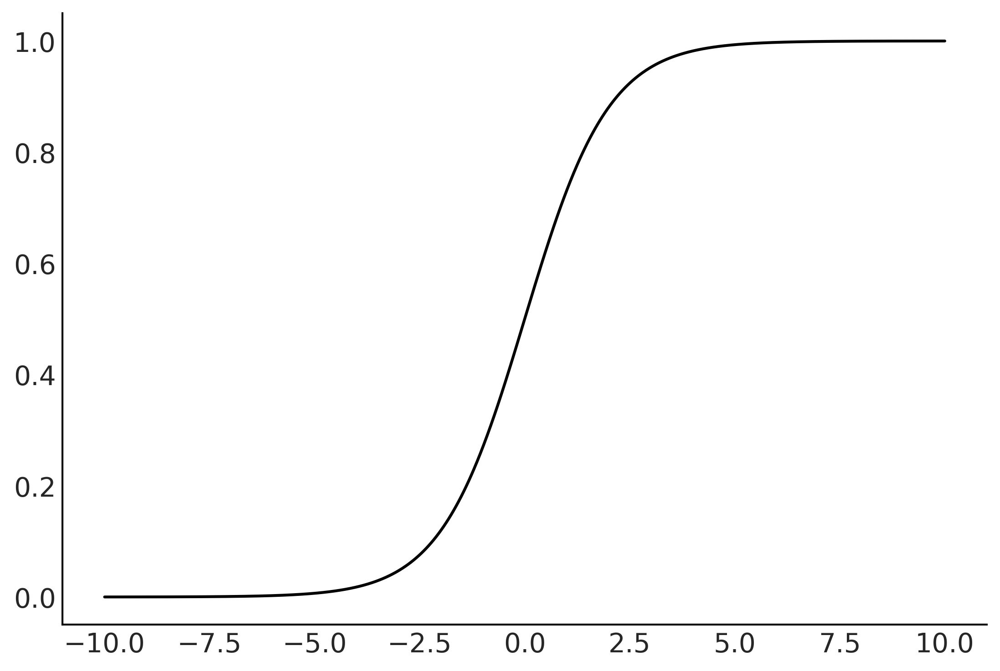
Code 3.22¶
species_filter = penguins["species"].isin(["Adelie", "Chinstrap"])
bill_length_obs = penguins.loc[species_filter, "bill_length_mm"].values
species = pd.Categorical(penguins.loc[species_filter, "species"])
with pm.Model() as model_logistic_penguins_bill_length:
β_0 = pm.Normal("β_0", mu=0, sigma=10)
β_1 = pm.Normal("β_1", mu=0, sigma=10)
μ = β_0 + pm.math.dot(bill_length_obs, β_1)
# Application of our sigmoid link function
θ = pm.Deterministic("θ", pm.math.sigmoid(μ))
# Useful for plotting the decision boundary later
bd = pm.Deterministic("bd", -β_0/β_1)
# Note the change in likelihood
yl = pm.Bernoulli("yl", p=θ, observed=species.codes)
prior_predictive_logistic_penguins_bill_length = pm.sample_prior_predictive(samples=10000)
trace_logistic_penguins_bill_length = pm.sample(5000, random_seed=0, chains=2)
posterior_predictive_logistic_penguins_bill_length = pm.sample_posterior_predictive(
trace_logistic_penguins_bill_length)
inf_data_logistic_penguins_bill_length = az.from_pymc3(
prior=prior_predictive_logistic_penguins_bill_length,
trace=trace_logistic_penguins_bill_length,
posterior_predictive=posterior_predictive_logistic_penguins_bill_length)
/tmp/ipykernel_83821/1502542871.py:21: FutureWarning: In v4.0, pm.sample will return an `arviz.InferenceData` object instead of a `MultiTrace` by default. You can pass return_inferencedata=True or return_inferencedata=False to be safe and silence this warning.
trace_logistic_penguins_bill_length = pm.sample(5000, random_seed=0, chains=2)
Auto-assigning NUTS sampler...
Initializing NUTS using jitter+adapt_diag...
Multiprocess sampling (2 chains in 4 jobs)
NUTS: [β_1, β_0]
100.00% [12000/12000 00:10<00:00 Sampling 2 chains, 4 divergences]
Sampling 2 chains for 1_000 tune and 5_000 draw iterations (2_000 + 10_000 draws total) took 11 seconds.
There were 2 divergences after tuning. Increase `target_accept` or reparameterize.
There were 2 divergences after tuning. Increase `target_accept` or reparameterize.
The number of effective samples is smaller than 25% for some parameters.
100.00% [10000/10000 00:05<00:00]
Figure 3.18¶
ax = az.plot_dist(prior_predictive_logistic_penguins_bill_length["yl"], color="C2")
ax.set_xticklabels(["Adelie: 0", "Chinstrap: 1"] )
plt.savefig("img/chp03/prior_predictive_logistic.png")
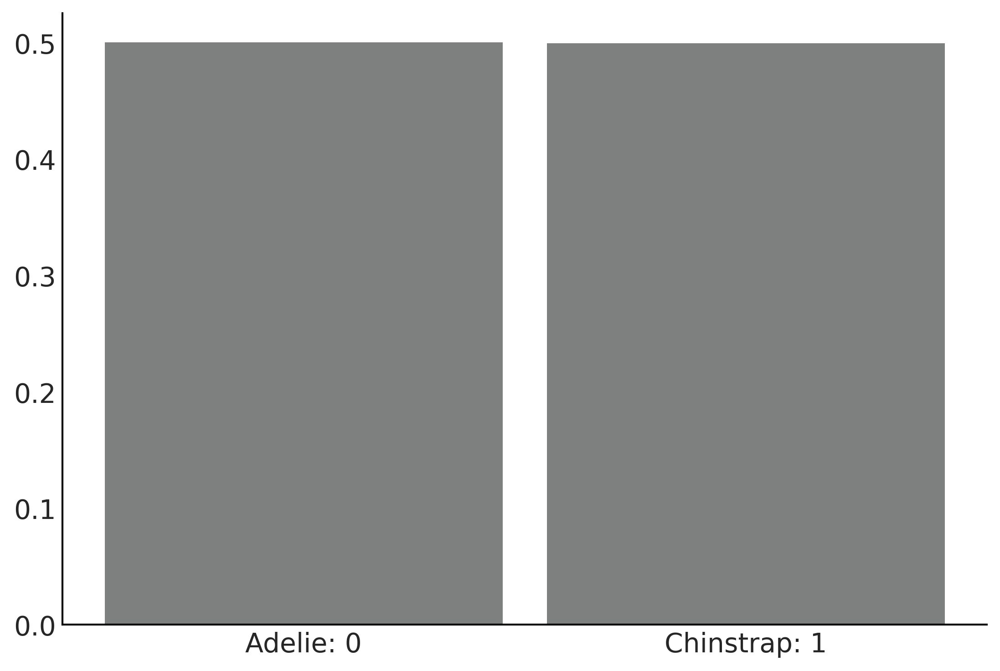
az.plot_trace(inf_data_logistic_penguins_bill_length, var_names=["β_0", "β_1"], kind="rank_bars");
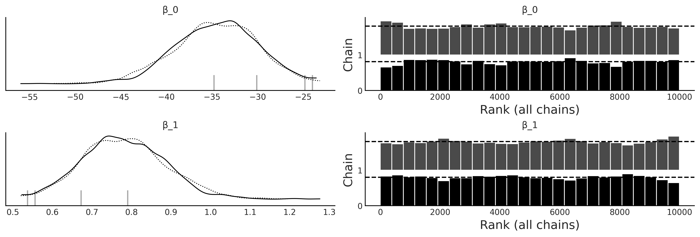
Table 3.3¶
az.summary(inf_data_logistic_penguins_bill_length, var_names=["β_0", "β_1"], kind="stats")
| mean | sd | hdi_3% | hdi_97% | |
|---|---|---|---|---|
| β_0 | -34.596 | 4.570 | -42.884 | -25.916 |
| β_1 | 0.782 | 0.105 | 0.585 | 0.973 |
Figure 3.19¶
fig, ax = plt.subplots()
theta = inf_data_logistic_penguins_bill_length.posterior["θ"].values.reshape((-1,214)).mean(axis=0)
idx = np.argsort(bill_length_obs)
# Decision Boundary
ax.vlines(inf_data_logistic_penguins_bill_length.posterior["bd"].values.mean(), 0, 1, color='k')
bd_hpd = az.hdi(inf_data_logistic_penguins_bill_length.posterior["bd"].values.flatten(), ax=ax)
plt.fill_betweenx([0, 1], bd_hpd[0], bd_hpd[1], color='C2', alpha=0.5)
for i, (label, marker) in enumerate(zip(species.categories, (".", "s"))):
_filter = (species.codes == i)
x = bill_length_obs[_filter]
y = np.random.normal(i, 0.02, size=_filter.sum())
ax.scatter(bill_length_obs[_filter], y, marker=marker, label=label, alpha=.8)
az.plot_hdi(bill_length_obs, inf_data_logistic_penguins_bill_length.posterior["θ"].values, color='C4', ax=ax, plot_kwargs={"zorder":10})
ax.plot(bill_length_obs[idx], theta[idx], color='C4', zorder=10)
ax.set_xlabel("Bill Length (mm)")
ax.set_ylabel('θ', rotation=0)
plt.legend()
plt.savefig("img/chp03/logistic_bill_length.png")
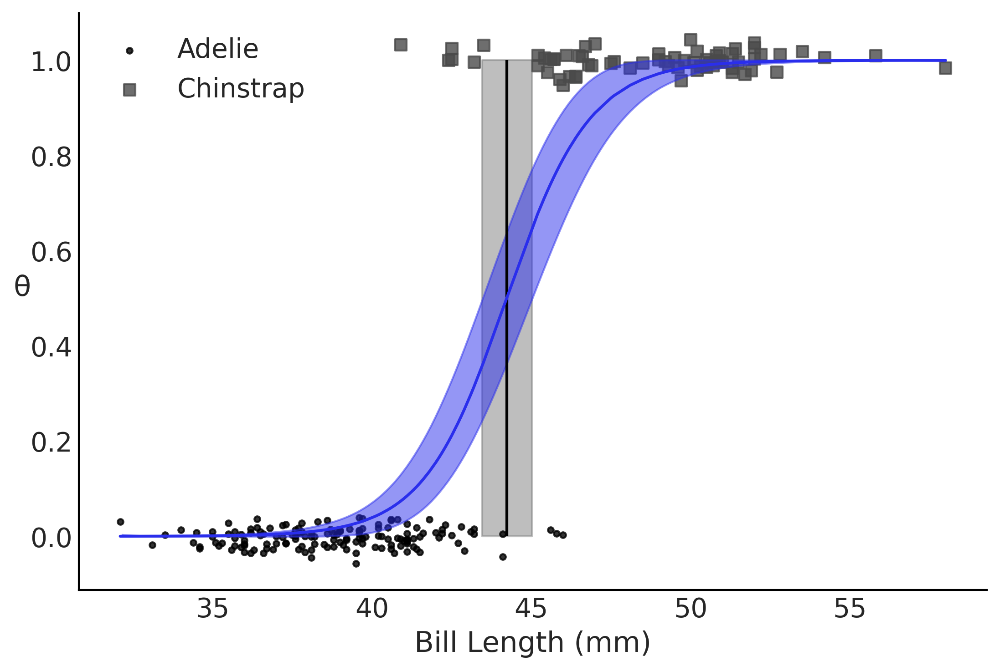
Code 3.23¶
mass_obs = penguins.loc[species_filter, "body_mass_g"].values
with pm.Model() as model_logistic_penguins_mass:
β_0 = pm.Normal("β_0", mu=0, sigma=10)
β_1 = pm.Normal("β_1", mu=0, sigma=10)
μ = β_0 + pm.math.dot(mass_obs, β_1)
θ = pm.Deterministic("θ", pm.math.sigmoid(μ))
bd = pm.Deterministic("bd", -β_0/β_1)
yl = pm.Bernoulli("yl", p=θ, observed=species.codes)
# inf_data_logistic_penguins_mass = pm.sample(
# 5000, target_accept=.9, return_inferencedata=True)
trace_logistic_penguins_mass = pm.sample(
5000, random_seed=0, chains=2, target_accept=.9)
posterior_predictive_logistic_penguins_mass = pm.sample_posterior_predictive(
trace_logistic_penguins_mass)
inf_data_logistic_penguins_mass = az.from_pymc3(
trace=trace_logistic_penguins_mass,
posterior_predictive=posterior_predictive_logistic_penguins_mass)
/tmp/ipykernel_83821/1556298904.py:16: FutureWarning: In v4.0, pm.sample will return an `arviz.InferenceData` object instead of a `MultiTrace` by default. You can pass return_inferencedata=True or return_inferencedata=False to be safe and silence this warning.
trace_logistic_penguins_mass = pm.sample(
Auto-assigning NUTS sampler...
Initializing NUTS using jitter+adapt_diag...
Multiprocess sampling (2 chains in 4 jobs)
NUTS: [β_1, β_0]
100.00% [12000/12000 00:13<00:00 Sampling 2 chains, 0 divergences]
Sampling 2 chains for 1_000 tune and 5_000 draw iterations (2_000 + 10_000 draws total) took 13 seconds.
The number of effective samples is smaller than 25% for some parameters.
100.00% [10000/10000 00:05<00:00]
az.plot_trace(inf_data_logistic_penguins_mass, var_names=["β_0", "β_1"], kind="rank_bars");
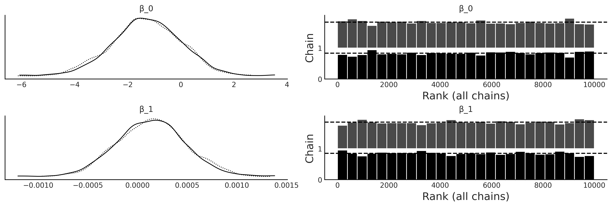
Table 3.4¶
az.summary(inf_data_logistic_penguins_mass, var_names=["β_0", "β_1", "bd"], kind="stats")
| mean | sd | hdi_3% | hdi_97% | |
|---|---|---|---|---|
| β_0 | -1.296 | 1.310 | -3.801 | 1.043 |
| β_1 | 0.000 | 0.000 | -0.001 | 0.001 |
| bd | 22363.063 | 1620369.002 | -17860.620 | 34643.374 |
Figure 3.20¶
theta = inf_data_logistic_penguins_mass.posterior['θ'].values
bd = inf_data_logistic_penguins_mass.posterior['bd'].values
fig, ax = plt.subplots()
theta = theta.reshape(-1,214).mean(axis=0)
idx = np.argsort(mass_obs)
ax.plot(mass_obs[idx], theta[idx], color='C4', lw=3)
for i, (label, marker) in enumerate(zip(species.categories, (".", "s"))):
_filter = (species.codes == i)
x = mass_obs[_filter]
y = np.random.normal(i, 0.02, size=_filter.sum())
ax.scatter(mass_obs[_filter], y, marker=marker, label=label, alpha=.8)
az.plot_hdi(mass_obs, inf_data_logistic_penguins_mass.posterior['θ'], color='C4', ax=ax)
ax.set_xlabel("Mass (Grams)")
ax.set_ylabel('θ', rotation=0)
plt.legend()
plt.savefig("img/chp03/logistic_mass.png")
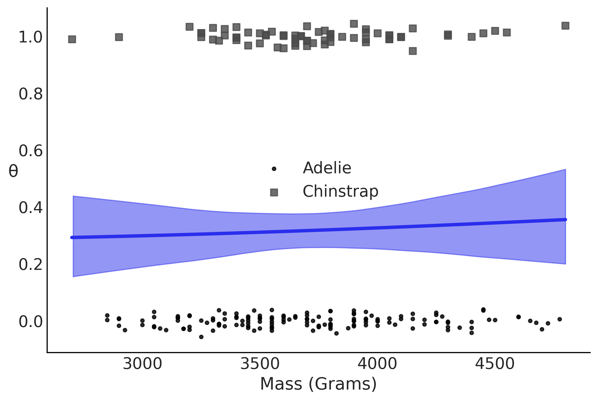
Code 3.24¶
X = penguins.loc[species_filter, ["bill_length_mm", "body_mass_g"]]
# Add a column of 1s for the intercept
X.insert(0,"Intercept", value=1)
X = X.values
with pm.Model() as model_logistic_penguins_bill_length_mass:
β = pm.Normal("β", mu=0, sigma=20, shape=3)
μ = pm.math.dot(X, β)
θ = pm.Deterministic("θ", pm.math.sigmoid(μ))
bd = pm.Deterministic("bd", -β[0]/β[2] - β[1]/β[2] * X[:,1])
yl = pm.Bernoulli("yl", p=θ, observed=species.codes)
# inf_data_logistic_penguins_bill_length_mass = pm.sample(
# 1000,
# return_inferencedata=True)
trace_logistic_penguins_bill_length_mass = pm.sample(
5000, random_seed=0, chains=2, target_accept=.9)
posterior_predictive_logistic_penguins_bill_length_mass = pm.sample_posterior_predictive(
trace_logistic_penguins_bill_length_mass)
inf_data_logistic_penguins_bill_length_mass = az.from_pymc3(
trace=trace_logistic_penguins_bill_length_mass,
posterior_predictive=posterior_predictive_logistic_penguins_bill_length_mass)
/tmp/ipykernel_83821/3234872761.py:21: FutureWarning: In v4.0, pm.sample will return an `arviz.InferenceData` object instead of a `MultiTrace` by default. You can pass return_inferencedata=True or return_inferencedata=False to be safe and silence this warning.
trace_logistic_penguins_bill_length_mass = pm.sample(
Auto-assigning NUTS sampler...
Initializing NUTS using jitter+adapt_diag...
Multiprocess sampling (2 chains in 4 jobs)
NUTS: [β]
100.00% [12000/12000 00:37<00:00 Sampling 2 chains, 9 divergences]
Sampling 2 chains for 1_000 tune and 5_000 draw iterations (2_000 + 10_000 draws total) took 40 seconds.
There were 8 divergences after tuning. Increase `target_accept` or reparameterize.
There was 1 divergence after tuning. Increase `target_accept` or reparameterize.
The number of effective samples is smaller than 25% for some parameters.
100.00% [10000/10000 00:04<00:00]
az.plot_trace(inf_data_logistic_penguins_bill_length_mass, compact=False, var_names=["β"], kind="rank_bars");
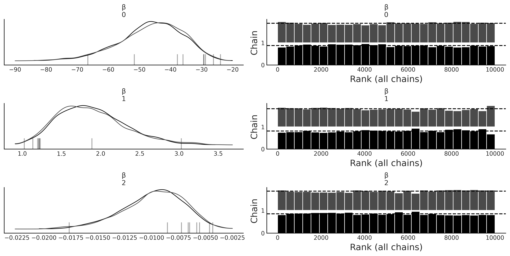
az.summary(inf_data_logistic_penguins_bill_length_mass, var_names=["β"])
| mean | sd | hdi_3% | hdi_97% | mcse_mean | mcse_sd | ess_bulk | ess_tail | r_hat | |
|---|---|---|---|---|---|---|---|---|---|
| β[0] | -46.258 | 10.337 | -66.077 | -28.061 | 0.248 | 0.179 | 1797.0 | 1898.0 | 1.0 |
| β[1] | 1.886 | 0.434 | 1.101 | 2.699 | 0.011 | 0.008 | 1614.0 | 1827.0 | 1.0 |
| β[2] | -0.010 | 0.003 | -0.016 | -0.005 | 0.000 | 0.000 | 1851.0 | 2348.0 | 1.0 |
Figure 3.21¶
fig,ax = plt.subplots()
idx = np.argsort(X[:,1])
bd = inf_data_logistic_penguins_bill_length_mass.posterior["bd"].values.reshape((-1,214)).mean(axis=0)[idx]
species_filter = species.codes.astype(bool)
# Linear fit
ax.plot(X[:,1][idx], bd, color='C4');
az.plot_hdi(X[:,1], inf_data_logistic_penguins_bill_length_mass.posterior["bd"].values.reshape((-1,214)), color='C4', ax=ax)
# Scatter
ax.scatter(X[~species_filter,1], X[~species_filter,2], alpha=.8, label="Adelie", zorder=10)
ax.scatter(X[species_filter,1], X[species_filter,2], marker="s", label="Chinstrap", zorder=10)
ax.set_ylabel("Mass (grams)")
ax.set_xlabel("Bill Length (mm)")
ax.legend()
plt.savefig("img/chp03/decision_boundary_logistic_mass_bill_length.png");
/home/canyon/miniconda3/envs/bmcp/lib/python3.9/site-packages/arviz/stats/stats.py:456: FutureWarning: hdi currently interprets 2d data as (draw, shape) but this will change in a future release to (chain, draw) for coherence with other functions
warnings.warn(
Code 3.26¶
az.compare({"mass": inf_data_logistic_penguins_mass,
"bill": inf_data_logistic_penguins_bill_length,
"mass_bill": inf_data_logistic_penguins_bill_length_mass}).round(1)
/home/canyon/miniconda3/envs/bmcp/lib/python3.9/site-packages/arviz/stats/stats.py:145: UserWarning: The default method used to estimate the weights for each model,has changed from BB-pseudo-BMA to stacking
warnings.warn(
/home/canyon/miniconda3/envs/bmcp/lib/python3.9/site-packages/arviz/stats/stats.py:655: UserWarning: Estimated shape parameter of Pareto distribution is greater than 0.7 for one or more samples. You should consider using a more robust model, this is because importance sampling is less likely to work well if the marginal posterior and LOO posterior are very different. This is more likely to happen with a non-robust model and highly influential observations.
warnings.warn(
| rank | loo | p_loo | d_loo | weight | se | dse | warning | loo_scale | |
|---|---|---|---|---|---|---|---|---|---|
| mass_bill | 0 | -11.3 | 1.6 | 0.0 | 1.0 | 3.1 | 0.0 | True | log |
| bill | 1 | -28.0 | 1.0 | 16.7 | 0.0 | 5.0 | 3.9 | False | log |
| mass | 2 | -135.7 | 2.0 | 124.4 | 0.0 | 5.3 | 5.8 | False | log |
Code 3.25¶
models = {"bill": inf_data_logistic_penguins_bill_length,
"mass": inf_data_logistic_penguins_mass,
"mass bill": inf_data_logistic_penguins_bill_length_mass}
_, axes = plt.subplots(3, 1, figsize=(12, 4), sharey=True)
for (label, model), ax in zip(models.items(), axes):
az.plot_separation(model, "yl", ax=ax, color="C4")
ax.set_title(label)
plt.savefig("img/chp03/penguins_separation_plot.png")
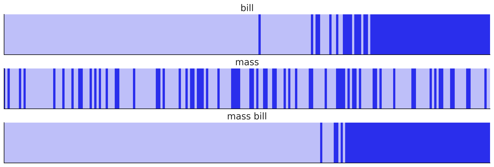
Code 3.27¶
penguins.loc[:,"species"].value_counts()
Adelie 146
Gentoo 119
Chinstrap 68
Name: species, dtype: int64
counts = penguins["species"].value_counts()
adelie_count = counts["Adelie"],
chinstrap_count = counts["Chinstrap"]
adelie_count/(adelie_count+chinstrap_count)
array([0.68224299])
Code 3.28¶
adelie_count/chinstrap_count
array([2.14705882])
inf_data_logistic_penguins_bill_length.posterior["β_0"].mean().values
array(-34.59583868)
β_0 = inf_data_logistic_penguins_bill_length.posterior["β_0"].mean().values
β_1 = inf_data_logistic_penguins_bill_length.posterior["β_1"].mean().values
β_0
array(-34.59583868)
β_1
array(0.7823039)
Code 3.29¶
bill_length = 45
val_1 = β_0 + β_1*bill_length
val_2 = β_0 + β_1*(bill_length+1)
f"Class Probability change from 45mm Bill Length to 46mm: {(special.expit(val_2) - special.expit(val_1))*100:.0f}%"
'Class Probability change from 45mm Bill Length to 46mm: 15%'
bill_length = np.array([30, 45])
val_1 = β_0 + β_1*bill_length
val_2 = β_0 + β_1*(bill_length+1)
#f"Slope Change {(val_2 - val_1):.2f} Probability Change {(special.expit(val_2) - special.expit(val_1)):.2f}"
special.expit(val_2) - special.expit(val_1)
array([1.74572147e-05, 1.53167524e-01])
Picking Priors in Regression Models¶
Figure 3.23¶
x = np.arange(-2,3,1)
y = [50, 44, 50, 47, 56]
import matplotlib.ticker as mtick
fig, ax = plt.subplots()
ax.scatter(x, y)
ax.set_xticks(x)
ax.yaxis.set_major_formatter(mtick.PercentFormatter(decimals=0))
ax.set_ylim(40, 60)
ax.set_xlabel("Attractiveness of Parent")
ax.set_ylabel("% of Girl Babies")
ax.set_title("Attractiveness of Parent and Sex Ratio")
plt.savefig("img/chp03/beautyratio.png")

Code 3.30¶
with pm.Model() as model_uninformative_prior_sex_ratio:
σ = pm.Exponential("σ", .5)
β_1 = pm.Normal("β_1", 0, 20)
β_0 = pm.Normal("β_0", 50, 20)
μ = pm.Deterministic("μ", β_0 + β_1 * x)
ratio = pm.Normal("ratio", mu=μ, sigma=σ, observed=y)
prior_predictive_uninformative_prior_sex_ratio = pm.sample_prior_predictive(
samples=10000)
trace_uninformative_prior_sex_ratio = pm.sample(random_seed=0)
inf_data_uninformative_prior_sex_ratio = az.from_pymc3(
trace=trace_uninformative_prior_sex_ratio,
prior=prior_predictive_uninformative_prior_sex_ratio)
/tmp/ipykernel_83821/1163978236.py:12: FutureWarning: In v4.0, pm.sample will return an `arviz.InferenceData` object instead of a `MultiTrace` by default. You can pass return_inferencedata=True or return_inferencedata=False to be safe and silence this warning.
trace_uninformative_prior_sex_ratio = pm.sample(random_seed=0)
Auto-assigning NUTS sampler...
Initializing NUTS using jitter+adapt_diag...
Multiprocess sampling (4 chains in 4 jobs)
NUTS: [β_0, β_1, σ]
100.00% [8000/8000 00:01<00:00 Sampling 4 chains, 1 divergences]
Sampling 4 chains for 1_000 tune and 1_000 draw iterations (4_000 + 4_000 draws total) took 2 seconds.
There was 1 divergence after tuning. Increase `target_accept` or reparameterize.
az.plot_posterior(inf_data_uninformative_prior_sex_ratio.prior, var_names=["β_0", "β_1"])
plt.savefig("img/chp03/priorpredictiveuninformativeKDE.png")
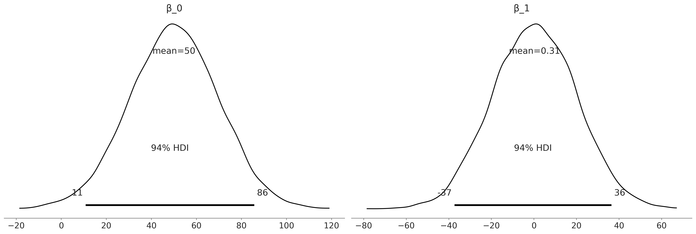
az.summary(inf_data_uninformative_prior_sex_ratio, var_names=["β_0", "β_1", "σ"], kind="stats")
| mean | sd | hdi_3% | hdi_97% | |
|---|---|---|---|---|
| β_0 | 49.331 | 1.913 | 45.539 | 52.663 |
| β_1 | 1.478 | 1.394 | -1.243 | 4.113 |
| σ | 4.208 | 1.440 | 2.094 | 6.869 |
Figure 3.24¶
fig, axes = plt.subplots(2,1, figsize=(5.5, 6), sharex=True)
np.random.seed(0)
# Take 10 sample from posterior
num_samples = 50
chain_sample = inf_data_uninformative_prior_sex_ratio.prior.chain.to_series().sample(num_samples, replace=True)
draw_sample = inf_data_uninformative_prior_sex_ratio.prior.draw.to_series().sample(num_samples, replace=True)
for chain, draw in zip(chain_sample, draw_sample):
b_0_draw = inf_data_uninformative_prior_sex_ratio.prior[{"draw":draw, "chain":chain}]["β_0"].values
b_1_draw = inf_data_uninformative_prior_sex_ratio.prior[{"draw":draw, "chain":chain}]["β_1"].values
# Plot Line
axes[0].plot(x, b_0_draw+b_1_draw*x, c="black", alpha=.3)
# Add median line later
b_0_hat = inf_data_uninformative_prior_sex_ratio.prior["β_0"].values.mean()
b_1_hat = inf_data_uninformative_prior_sex_ratio.prior["β_1"].values.mean()
axes[0].plot(x, b_0_hat+b_1_hat*x, c="blue", linewidth=4)
# Add scatter plot
axes[0].scatter(x, y)
axes[0].set_xticks(x)
axes[0].yaxis.set_major_formatter(mtick.PercentFormatter(decimals=0))
axes[0].set_ylim(40, 60)
axes[0].set_ylabel("% of Girl Babies")
axes[0].set_title("Prior samples from uninformative priors")
b_0_hat, b_1_hat
np.random.seed(0)
# Take 10 sample from posterior
num_samples = 50
chain_sample = inf_data_uninformative_prior_sex_ratio.posterior.chain.to_series().sample(num_samples, replace=True)
draw_sample = inf_data_uninformative_prior_sex_ratio.posterior.draw.to_series().sample(num_samples, replace=True)
for chain, draw in zip(chain_sample, draw_sample):
b_0_draw = inf_data_uninformative_prior_sex_ratio.posterior[{"draw":draw, "chain":chain}]["β_0"].values
b_1_draw = inf_data_uninformative_prior_sex_ratio.posterior[{"draw":draw, "chain":chain}]["β_1"].values
# Plot Line
axes[1].plot(x, b_0_draw+b_1_draw*x, c="black", alpha=.3)
# Add median line later
b_0_hat = inf_data_uninformative_prior_sex_ratio.posterior["β_0"].values.mean()
b_1_hat = inf_data_uninformative_prior_sex_ratio.posterior["β_1"].values.mean()
axes[1].plot(x, b_0_hat+b_1_hat*x, c="blue", linewidth=4)
# Add scatter plot
axes[1].scatter(x, y)
axes[1].set_xticks(x)
axes[1].yaxis.set_major_formatter(mtick.PercentFormatter(decimals=0))
axes[1].set_ylim(40, 60)
axes[1].set_xlabel("Attractiveness of Parent")
axes[1].set_ylabel("% of Girl Babies")
axes[1].set_title("Posterior samples from uninformative priors")
b_0_hat, b_1_hat
axes[1].title.set_fontsize(12)
for ax in axes:
for item in ([ax.title, ax.xaxis.label, ax.yaxis.label] +
ax.get_xticklabels() + ax.get_yticklabels()):
item.set_fontsize(12)
plt.savefig("img/chp03/posterioruninformativelinearregression.png")
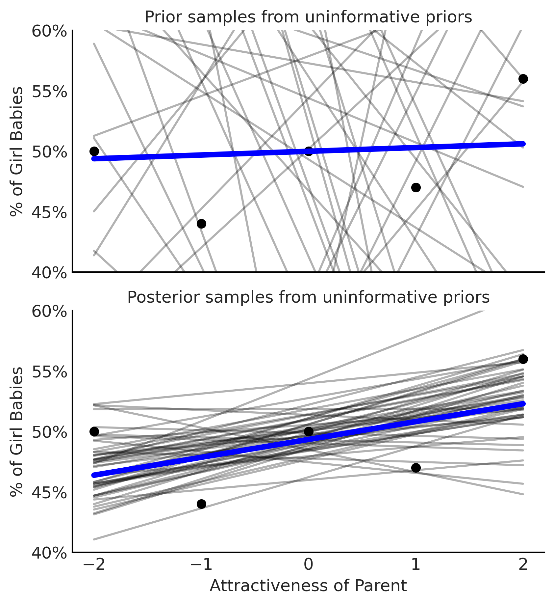
Code 3.31¶
with pm.Model() as model_informative_prior_sex_ratio:
σ = pm.Exponential("σ", .5)
β_1 = pm.Normal("β_1", 0, .5)
β_0 = pm.Normal("β_0", 48.5, .5)
μ = pm.Deterministic("μ", β_0 + β_1 * x)
ratio = pm.Normal("ratio", mu=μ, sigma=σ, observed=y)
prior_predictive_informative_prior_sex_ratio = pm.sample_prior_predictive(
samples=10000)
trace_informative_prior_sex_ratio = pm.sample(random_seed=0)
inf_data_informative_prior_sex_ratio = az.from_pymc3(
trace=trace_informative_prior_sex_ratio,
prior=prior_predictive_informative_prior_sex_ratio)
/tmp/ipykernel_83821/4233814204.py:13: FutureWarning: In v4.0, pm.sample will return an `arviz.InferenceData` object instead of a `MultiTrace` by default. You can pass return_inferencedata=True or return_inferencedata=False to be safe and silence this warning.
trace_informative_prior_sex_ratio = pm.sample(random_seed=0)
Auto-assigning NUTS sampler...
Initializing NUTS using jitter+adapt_diag...
Multiprocess sampling (4 chains in 4 jobs)
NUTS: [β_0, β_1, σ]
100.00% [8000/8000 00:01<00:00 Sampling 4 chains, 0 divergences]
Sampling 4 chains for 1_000 tune and 1_000 draw iterations (4_000 + 4_000 draws total) took 2 seconds.
az.summary(inf_data_informative_prior_sex_ratio, var_names=["β_0", "β_1", "σ"], kind="stats")
| mean | sd | hdi_3% | hdi_97% | |
|---|---|---|---|---|
| β_0 | 48.578 | 0.500 | 47.671 | 49.569 |
| β_1 | 0.244 | 0.468 | -0.630 | 1.082 |
| σ | 4.063 | 1.241 | 2.153 | 6.467 |
Figure 3.25¶
fig, axes = plt.subplots(2,1, figsize=(5.5, 6), sharex=True)
np.random.seed(0)
# Take 10 sample from posterior
num_samples = 50
chain_sample = inf_data_informative_prior_sex_ratio.prior.chain.to_series().sample(num_samples, replace=True)
draw_sample = inf_data_informative_prior_sex_ratio.prior.draw.to_series().sample(num_samples, replace=True)
for chain, draw in zip(chain_sample, draw_sample):
b_0_draw = inf_data_informative_prior_sex_ratio.prior[{"draw":draw, "chain":chain}]["β_0"].values
b_1_draw = inf_data_informative_prior_sex_ratio.prior[{"draw":draw, "chain":chain}]["β_1"].values
# Plot Line
axes[0].plot(x, b_0_draw+b_1_draw*x, c="black", alpha=.3)
# Add median line later
b_0_hat = inf_data_informative_prior_sex_ratio.prior["β_0"].values.mean()
b_1_hat = inf_data_informative_prior_sex_ratio.prior["β_1"].values.mean()
axes[0].plot(x, b_0_hat+b_1_hat*x, c="blue", linewidth=4)
# Add scatter plot
axes[0].scatter(x, y)
axes[0].set_xticks(x)
axes[0].yaxis.set_major_formatter(mtick.PercentFormatter(decimals=0))
axes[0].set_ylim(40, 60)
axes[0].set_ylabel("% of Girl Babies")
axes[0].set_title("Prior samples from informative priors");
np.random.seed(0)
num_samples = 50
chain_sample = inf_data_informative_prior_sex_ratio.posterior.chain.to_series().sample(num_samples, replace=True)
draw_sample = inf_data_informative_prior_sex_ratio.posterior.draw.to_series().sample(num_samples, replace=True)
for chain, draw in zip(chain_sample, draw_sample):
b_0_draw = inf_data_informative_prior_sex_ratio.posterior[{"draw":draw, "chain":chain}]["β_0"].values
b_1_draw = inf_data_informative_prior_sex_ratio.posterior[{"draw":draw, "chain":chain}]["β_1"].values
# Plot Line
axes[1].plot(x, b_0_draw+b_1_draw*x, c="black", alpha=.3)
# Add median line later
b_0_hat = inf_data_informative_prior_sex_ratio.posterior["β_0"].values.mean()
b_1_hat = inf_data_informative_prior_sex_ratio.posterior["β_1"].values.mean()
axes[1].plot(x, b_0_hat+b_1_hat*x, c="blue", linewidth=4)
# Add scatter plot
axes[1].scatter(x, y)
axes[1].set_xticks(x)
axes[1].yaxis.set_major_formatter(mtick.PercentFormatter(decimals=0))
axes[1].set_ylim(40, 60)
axes[1].set_xlabel("Attractiveness of Parent")
axes[1].set_ylabel("% of Girl Babies")
axes[1].set_title("Posterior samples from informative priors")
for ax in axes:
for item in ([ax.title, ax.xaxis.label, ax.yaxis.label] +
ax.get_xticklabels() + ax.get_yticklabels()):
item.set_fontsize(12)
b_0_hat, b_1_hat
plt.savefig("img/chp03/posteriorinformativelinearregression.png")
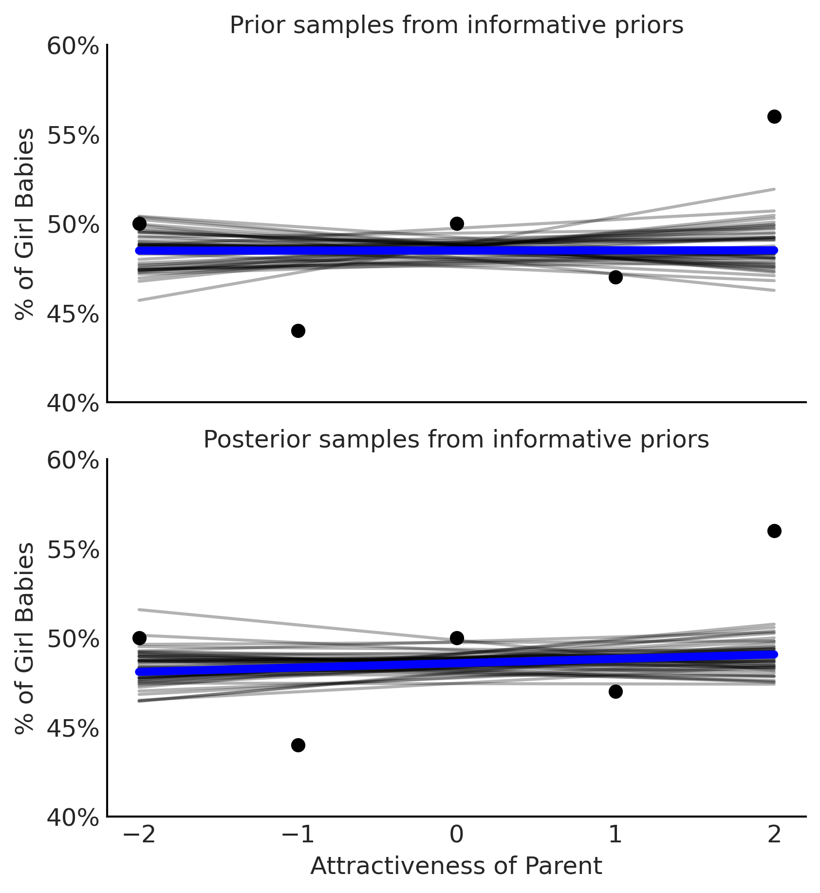